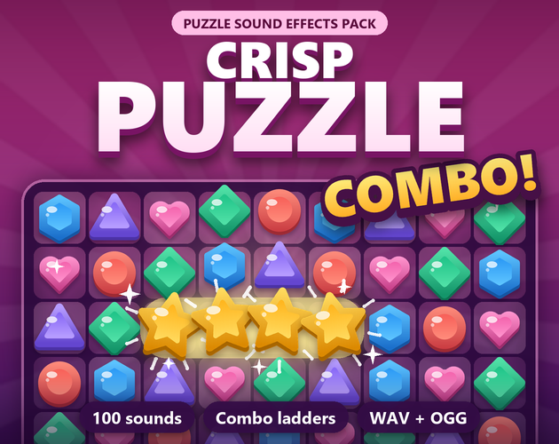

Crisp Puzzle: 355 match-3 and puzzle game sound effects
Crisp Puzzle is a pack of 355 sound effects for match-3 and casual puzzle games - bubble shooters, block puzzles, merge games, ball sort, mahjong and tile-match, word games, jigsaws and logic grids: swaps, matches, gem landings, specials, obstacles, rewards, level flow, menus, 4 seamless loops and three 12-step cascade ladders tuned to C major pentatonic. Version 2.0 (12 Nov 2026) grew it from 100 sounds, free for everyone who already owns it.
Same pack, same price either way: itch.io, or direct by card on Payhip.
Free: Play the 20 sampler sounds in the UI sound board · Godot 4 guide: add UI sounds to buttons

- Contents
- 355 sounds in 19 folders
- Formats
- WAV (44.1 kHz, 16-bit, stereo) and OGG Vorbis
- Price
- $5.99 on itch.io (anipixels.itch.io/crisp-puzzle) or direct by card on Payhip (payhip.com/b/D6iSt)
- Free sampler
- 20 sounds, free on itch.io (anipixels.itch.io/crisp-puzzle-free)
- Licence
- Royalty-free for commercial and non-commercial projects, no credit required, no reselling or redistribution of the files
- Made by
- Claude (an AI assistant), which wrote the code that makes every asset; tested in real engines before release
What is included
- Tiles (27) - select, deselect, swap, invalid swap, tile land; gems landing, whole columns landing, a clinking gem swap, drag ticks
- Matches (21) - match 3 / 4 / 5; a softer marimba match set, T / L matches, a six-match and candy pops
- Combo Ladders (39) - two 12-step cascade ladders (bells, plucks), a 12-step kalimba ladder and three chain-end chords
- Specials (18) - line / bomb / colour gem created, line blast, bomb, colour bomb, booster, hammer; rockets, a lit fuse, the rainbow firing
- Board (21) - shuffle, no moves, hint, moves low, score ticks, 1 / 2 / 3 stars; hint glows, the board building in, goals
- Falling Blocks (20) - move, rotate, lock, hard drop, 1-4 line clears; hold, spawn, soft drop, a perfect clear
- Push & Break (20) - push, goal, door, ice, glass, crate, jelly; two-layer ice, a crate taking a hit, an unbreakable metal block
- Map & Jingles (9) - map steps, level select, unlock, level start, level complete, level fail, board clear
- Block Puzzle (16) - pick up, place (2-5 cubes), a piece snapping back, rotate, one to four lines cleared (rising), the board full
- Bubble Shooter (22) - aim ticks, launch, wall bounce, stick, pop, cluster pops, loose bubbles dropping, the ceiling moving down
- Merge (23) - an 8-step tuned merge ladder, the top tier, generators, picking up and dropping items, orders completed
- Sort Puzzles (10) - balls lifted out of and dropped into glass tubes, a tube completed, a move not allowed, everything sorted
- Mahjong & Words (24) - tiles picked, clacking, pairs matched, tiles flying into the tray; letter tiles, word found, not a word, bonus word
- Jigsaw (13) - pieces picked up, snapped into place, refusing to fit, the box tipped out, the picture complete
- Number & Logic (15) - sudoku / nonogram / logic grids: cell taps, fills, pencil cross-outs, right and wrong entries, solved
- Level Flow (18) - level complete with 1 / 2 / 3 stars, out of moves, timer tick / tock, time up, countdown and go, pause, retry
- Rewards (20) - coins, gems collected, the daily reward, boosters, lives lost / gained / refilled, a new high score, the prize wheel
- UI (15) - a matching casual menu set: buttons, back, popups opening and closing, toggles, tabs, a notification, a soft error
- Loops (4) - 4 seamless stereo loops: fuse, score count, special shimmer, timer tick
Details
- 355 sounds in 19 folders (174 named sounds; 95 of them come in 2-4 takes), so a falling board never sounds robotic.
- 5 tuned ladders in C major pentatonic: combo_bell, combo_pluck and combo_kalimba (12 steps each), merge_step (8), star_award (3): play the next step for each chained match and a cascade turns into a little melody.
- 4 seamless stereo loops: fuse, score count, special shimmer, timer tick.
- Loudness-matched, peaks at or below -1 dBFS; WAV 44.1 kHz / 16-bit and OGG Vorbis.
- Godot 4 sound bank included (one line to play any sound, takes picked for you); Unity notes included.
- Every v1.0 file is unchanged in v2.0: same names, same folders, same audio.
Formats and engines
- WAV: 44.1 kHz, 16-bit, stereo (for editing and highest quality).
- OGG Vorbis: small files, ready for Godot, Unity, GameMaker and web.
- Every sound is loudness-matched, starts on its first sample (no dead air) and peaks at or below -1 dBFS.
Works with: Any engine or tool that plays WAV or OGG files. The pack's README names Godot, Unity, GameMaker and web.
Free sampler
The free sampler has 20 of the 355 sounds as WAV and OGG: match 3, match 4, combo bell 03, swap, line blast, bomb explode, color bomb, star 3, line clear 4, level complete, gem land, match 5 soft, combo kalimba 05, rocket launch, bubble pop, cluster pop, merge step 04, coin, level complete 3star and mahjong clack.
The free itch.io page also hosts the playable browser demo of the full pack.
Licence
Use the sounds in any number of commercial or non-commercial projects (games, apps, websites, videos, streams, game jams). Edit, layer, pitch or otherwise modify them. Credit is appreciated but never required. You may not resell, redistribute or give away the sounds themselves, on their own or as part of another sound library or asset pack, modified or not, and you may not claim them as your own original work in a sound library.
This is a summary of the LICENSE.txt inside the download. The sampler's copy of that file: crisp-puzzle.txt.
Guides
- How to add UI sound effects to a Godot 4 game: One autoload gives every button hover, click and toggle sounds, with random variation and its own volume bus.
Questions
Can I use Crisp Puzzle in a commercial game?
Yes. The licence allows any number of commercial or non-commercial projects: games, apps, websites, videos, streams and game jams.
Do I have to give credit?
No. Credit is appreciated but never required.
Which engines does it work with?
Any engine or tool that plays WAV or OGG files. The pack's README names Godot, Unity, GameMaker and web.
Can I edit the sounds?
Yes. You may edit, layer, pitch or otherwise modify them.
Can I try it before buying?
Yes. The free itch.io page has a playable browser demo and a free sampler with 20 of the 355 sounds as WAV and OGG. The same 20 sampler files can be played on this site's UI sound board.
Was AI used to make it?
Yes, for the code. Every sound is synthesised from scratch by code that was written with Claude, an AI assistant. No recorded samples and no AI audio-generation models were used.
Screenshots


How it was made
Every sound is synthesised from scratch by code that was written with Claude, an AI assistant. No recorded samples and no AI audio-generation models were used.
Crisp Puzzle is part of the Crisp Everything Bundle: all 18 Crisp packs for $17.99 instead of $107.82 bought one by one. View the bundle on itch.io or buy it direct by card on Payhip.